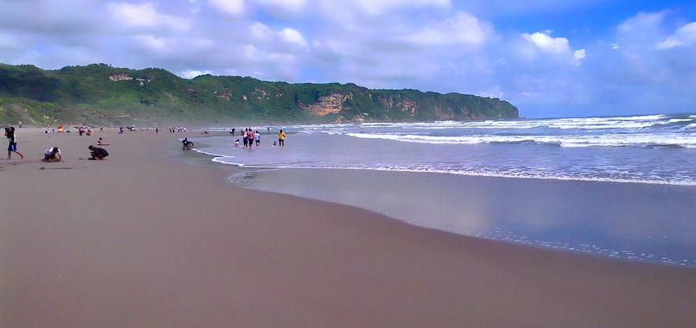
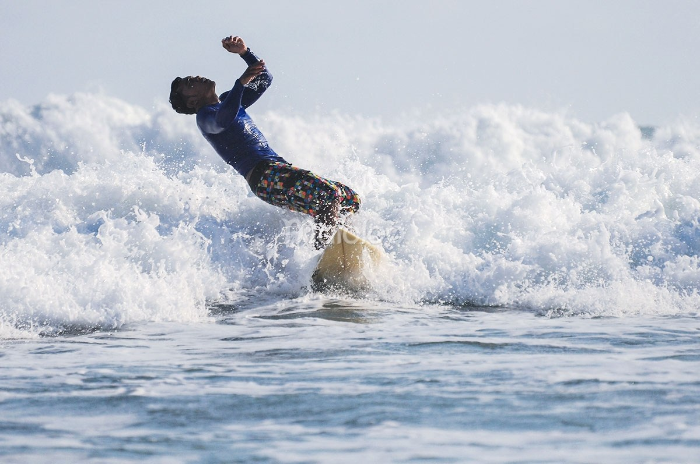

Pantai parangtritis atau yang oleh warga jogja disingkat pantai paris merupakan satu nama pantai paling terkenal di kota budaya ini. Pantai yang terkenal dengan ombak besar dan mitos tentang Nyi Roro Kidul ini menyimpan sejuta keindahan dan juga berbalut misteri bagi yang mempercayainya. Apapun itu, bila kamu sedang berwisata ke Yogyakarta, selain ke Keraton Yogyakarta, kamu juga harus datang ke pantai parangtritis. Terletak di kawasan paling selatan pulau jawa, pantai parangtritis terhubung dengan samudra hindia. Suasana panas namun dengan hembusan angin yang kencang akan menyapa kamu saat sampai di kawasan objek wisata pantai parangtritis ini.
Orang Indonesia, dan dalam hal ini Jawa, dan lebih khusus lagi orang Jogja tentu sudah mengenal mitos mengenai pantai parangtritis dan kerajaan jin yang dipimpin seorang ratu bernama NYi Roro Kidul. Satu lagi mitos yang dipercayai di pantai ini adalah larangan mengenakan baju warna hijau di sekitar wilayah pantai parangtritis. Warna hijau dipercaya sebagai warna kesukaan sang ratu launt selatan, dan juga merupakan warna pakaian bala tentaranya. Memakai warna hijau dipercaya bisa membuatmu akan tergulung ombak saat berenang di pantai.
 Selain terkenal akan keindahannya, parangtritis juga sering digunakan untuk surfing karena ombaknya yang tinggi. Itu memberikan